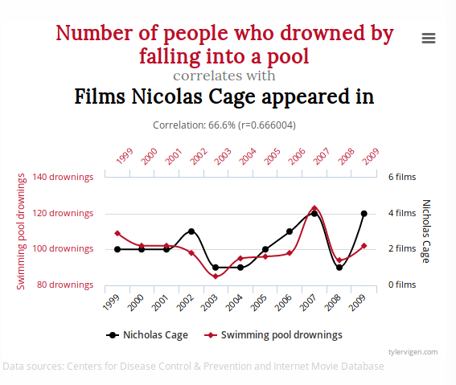
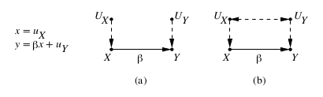
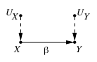
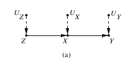
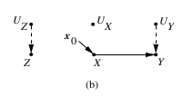
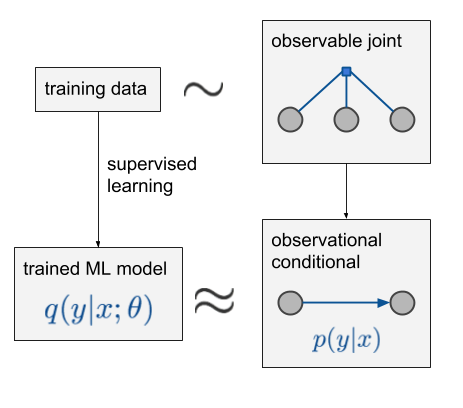
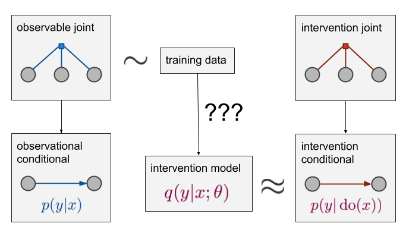
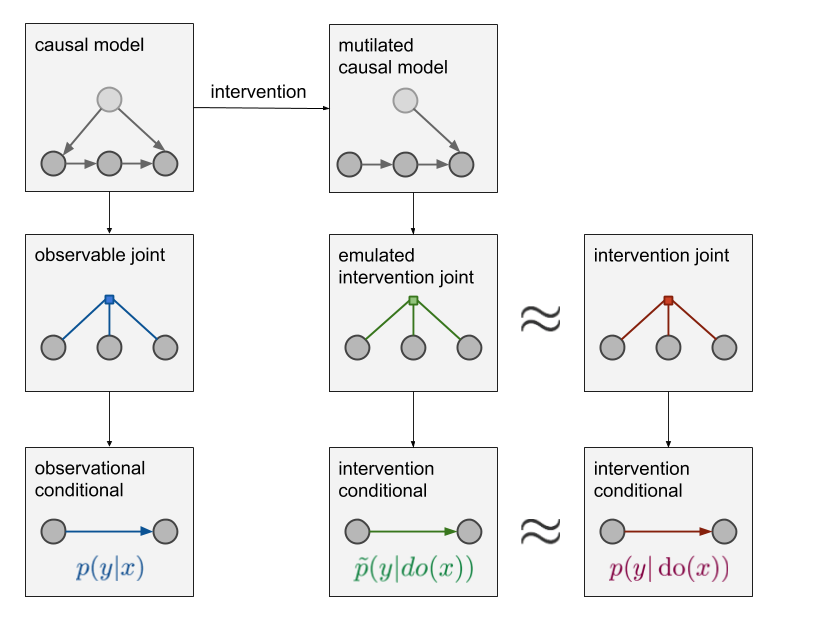
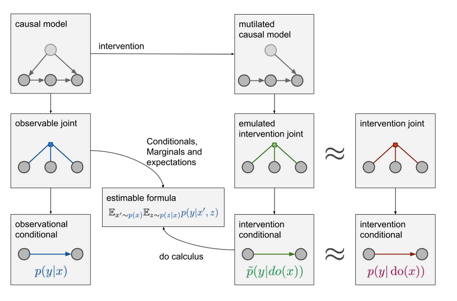

Causal Inference
Una introducción a la inferencia causal
Bart Ortiz from GeNeura research group
Based on Judea Pearl paper
Introducción
Introducción
- what is the efficacy of a given drug in a given population?
- Whether data can prove an employer guilty of hiring discrimination?
- What fraction of past crimes could have been avoided by a given policy?
- What was the cause of death of a givenindividual, in a specific incident?
Differences between association and causation
Standard statistical analysis
Assess parameters of a distribution from samples drawn of that distribution.
With the help of such parameters, one can infer associations among variables, estimate beliefs or probabilities of past and future events, as well as update those probabilities in light of new evidence or new measurements.- correlation
- regression
- dependence
- conditional independence
- likelihood
- marginalization
Causal analysis
Its aim is to infer not only beliefs or probabilities under static conditions, but also the dynamics of beliefs under changing conditions.- randomization
- influence
- effect
- confounding
- spurious correlation
- faithfulness/stability
- intervention
- explanation
Structural Causal Model (SCM)
- structural equation models (SEM)
- the potential outcome framework
- the graphical models
Structural Equations Models
Let be $X$ a disease variable and $Y$ a certain symptom of the disease. $$ y = \beta x+u_y $$Where $x$ is the severity of disease and $y$ is the severity of the symptom.
Structural Equations Models
But this is symetrical and limited. So we changed it: \begin{aligned} x &=f_{X}\left(u_{X}\right) \\ y &=f_{Y}\left(y, u_{X}\right) \end{aligned} Structural Equations Models
And we can overcome nonlinearity: \begin{aligned} z &=f_{Z}\left(u_{Z}\right) \\ x &=f_{X}\left(z, u_{X}\right) \\ y &=f_{Y}\left(x, u_{Y}\right) \end{aligned} Structural Equations Models
And model interventions: \begin{aligned} z &=f_{Z}\left(u_{Z}\right) \\ x &=x_0 \\ y &=f_{Y}\left(x, u_{Y}\right) \end{aligned} Structural Equations Models
- D-separation
- Causal Sufficiency
- Causal feedback
Structural Equations Models
Any probability distribution induced by an acyclic, causally sufficient SCM M can be factorized as: $$p_{\mathcal{M}}\left(X_{1}, \ldots, X_{N}\right)=\prod_{i=1}^{N} p_{\mathcal{M}}\left(X_{i} | \mathbf{X}_{\mathrm{pa}(i)}\right)$$ And, after and intervention: $$p_{\mathcal{M}_{\xi_{l}}}\left(X_{1}, \ldots, X_{N} | \operatorname{do}\left(\mathbf{X}_{l}=\xi_{l}\right)\right)=$$ $$\prod_{i=1 \atop i \notin l}^{N} p_{\mathcal{M}}\left(X_{i} | \mathbf{X}_{\mathrm{pa}(i)}\right) \prod_{i \in I} \mathbf{1}_{\left[X_{i}=\xi_{i}\right]}$$Causal infrence and ML
Causal infrence and ML
Causal infrence and ML
Causal infrence and ML
Conclusiones
- Fundamental area to develop an accurate description of reality
- Now we have mathematical formulation for this
- Is not a question of whether you work on deep learning or causal inference
“ Perhaps our ultimate understanding of scientific topics is measured in terms of our ability to generate metaphoric pictures of what is going on. Maybe understanding is coming up with metaphoric pictures”Per Bak (1996). How Nature Works: the science of self-organized criticality
THE END
- Dudas?Some related links
On frequency of scale free behaviour in networks
More info about some mechanisms
Finally, any book by Mark Newman (He's a beast)